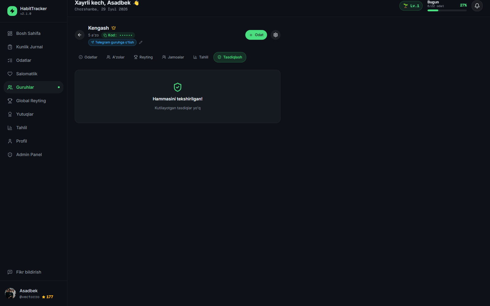

Telegramdagi tartibsiz jarayonni — tartibli, xavfsiz va shaffof mahsulotga aylantiramiz. Foydalanuvchilar odatlarini bajarib isbot yuboradi, guruh adminlari esa har bir isbotni ko'rib chiqib tasdiqlaydi yoki rad etadi. Shaffof, adolatli va o'lchanadigan.

Foydalanuvchi o'z odatini tanlaydi, muddat va vaqt belgilaydi.
Bajarilgan ishning matn yoki rasm isboti tracker'ga joylanadi.
Guruh admini/sardori har bir isbotni ko'rib tasdiqlaydi yoki rad etadi.
Tasdiqlangan odat uchun tangalar beriladi va streak yangilanadi.